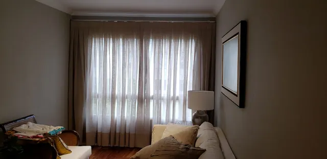
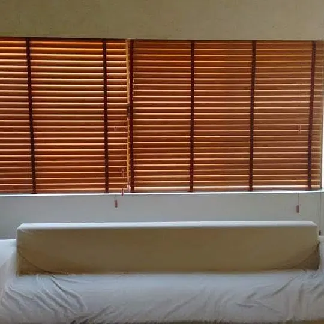
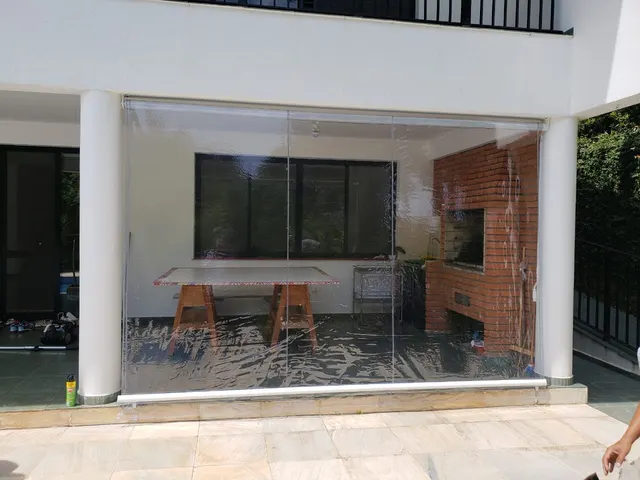
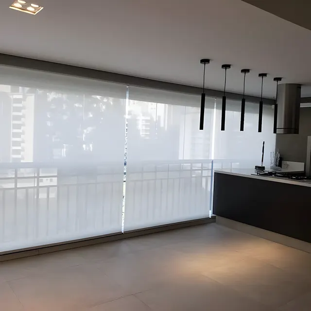
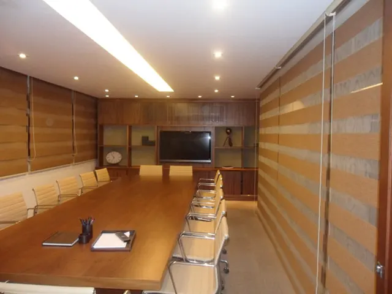

Luz na medida certa para cada ambiente.
Cortinas, persianas e toldos com ampla variedade de cores e padrões — e oficina e lavanderia próprias para cuidar deles depois.
Cortinas, persianas e toldos — com oficina e lavanderia próprias.

- +20 anosde experiência dos nossos técnicos no mercado
- Oficina própriae lavanderia própria — melhor custo-benefício
- Do rústico ao modernoampla variedade de cores, tecidos e padrões
Nossas linhas: Escolha pela luz que você quer em casa.
Do blackout para o quarto à tela solar da varanda: cada linha tem modelos para controlar luz, privacidade e temperatura.

Cortinas
7 modelosModernas e arrojadas, com movimentos elegantes. Tecido, romana, rolô, celular, fibra natural, translúcida e para tetos.

Persianas
4 modelosNobres e aconchegantes, com controle de luz preciso. Horizontal em alumínio ou madeira, rolô dupla e vertical.

Toldos
2 modelosProteção contra sol, vento e chuva para fachadas e varandas. Em lona de tecido ou transparente.
Lavagem e manutenção com oficina própria.
Cuidamos de cortinas, persianas e tapetes na nossa própria lavanderia — sem terceirizar, com mais controle e melhor custo-benefício.
Agendar uma lavagem- CortinasLavagem e manutenção
- PersianasLavagem e manutenção
- TapetesLavagem em lavanderia própria
Projetos realizados: Ambientes que já transformamos.






“Qualidade, sofisticação e modernidade para o seu ambiente.”
Quem somos
Somos uma empresa especializada em cortinas e persianas, com ampla variedade de cores e padrões para atender com requinte a qualquer estilo.
Nossos técnicos estão no mercado há mais de 20 anos e seguem se especializando no que há de melhor — para trazer a confiabilidade e a segurança que você procura.
Faça seu orçamento.
Fale com a gente pelo WhatsApp e receba sugestões de modelo e orçamento.